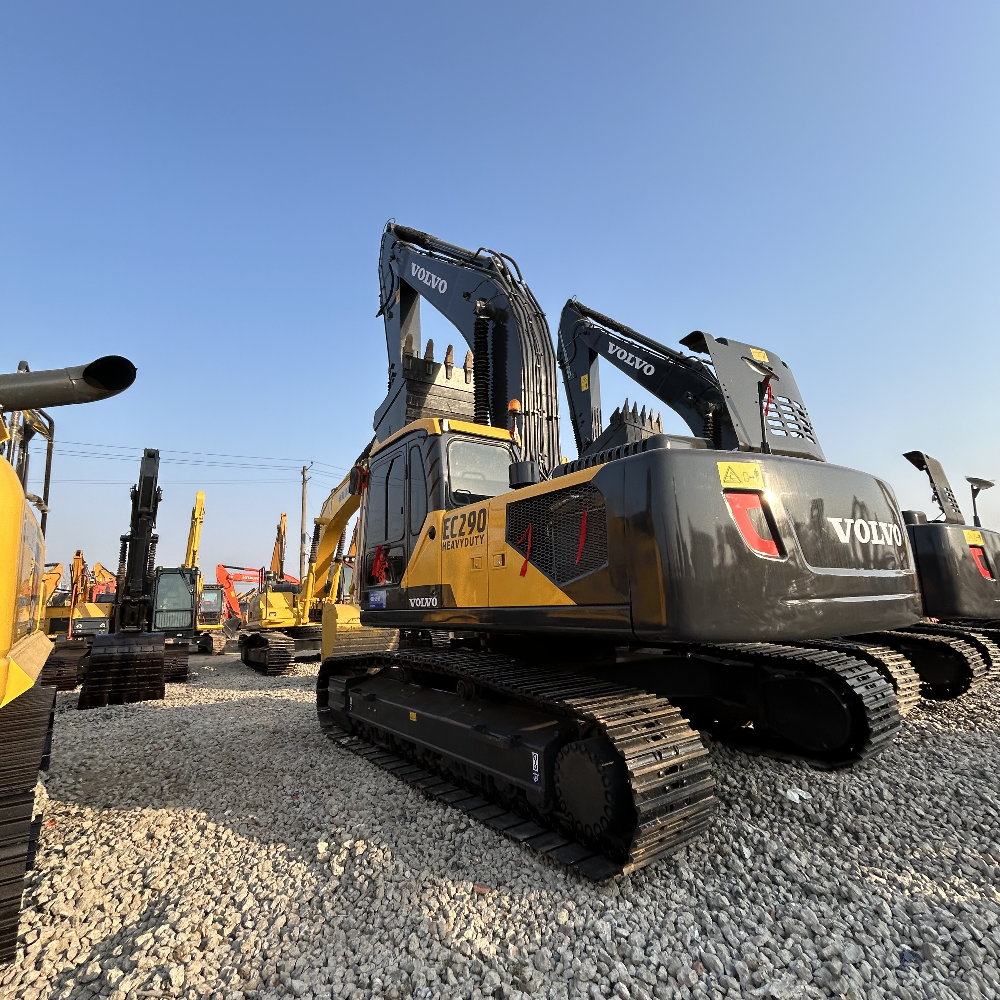

Refurbished Volvo EC290 Excavator
The Volvo EC290 is a highly versatile and durable excavator designed for a wide range of applications, from construction and demolition to excavation and material handling. As a part of Volvo's renowned EC series, the EC290 is recognized for its exceptional performance, fuel efficiency, and overall reliability. When looking for a more cost-effective solution, a refurbished Volvo EC290 offers an excellent alternative to purchasing a new unit, providing a high level of performance and longevity at a significantly lower price.
Honestly, it's almost impossible to buy a brand new excavator from China. They either don't exist or are made in China. If a Chinese seller tells you their Caterpillar/Komatsu/Volvo/Kobelco/Hitachi is brand new, they're lying. Therefore, a refurbished excavator is your best bet.

Here are the detailed specifications for a refurbished Volvo EC290BLC excavator:
Operating Weight and Dimensions
- Operating Weight: 28,000–29,500 kg
- Transport Length: ~10.9–11.2 meters
- Transport Width: ~3.2 meters
- Transport Height: ~3.2–3.4 meters
- Tail Swing Radius: ~3.5–3.7 meters
- Ground Clearance: ~470–500 mm
- Track Width: 600 mm standard
Engine and Powertrain
- Engine Model: Volvo D7D EBE2 (Tier 2 compliant)
- Rated Power Output: ~170–180 kW (228–241 hp) @ 1,800 rpm
- Maximum Torque: ~1,050–1,150 Nm
- Fuel Tank Capacity: ~500–550 liters
- Travel Speed: 3.0–5.0 km/h
- Swing Speed: ~9.0 rpm
- Gradeability: Up to 35°
Hydraulic System
- Main Pump Type: Variable displacement axial piston pumps
- Flow Rate: ~2 × 300–320 L/min
- System Pressure: Up to 34.3 MPa
- Hydraulic Oil Capacity: ~400–450 liters
- Boom/Arm/Bucket Priority: Load-sensing with flow sharing
- Regeneration System: Improves simultaneous operations and cycle speed
Performance Metrics
- Bucket Capacity: 1.4–2.1 m³ (SAE heaped)
- Max Digging Depth: ~7.2–7.5 meters
- Max Reach (Horizontal): ~10.8–11.2 meters
- Max Dump Height: ~6.8–7.0 meters
- Bucket Digging Force: ~180–190 kN
- Arm Digging Force: ~130–140 kN
Cab and Operator Features
- Cab Type: ROPS/FOPS certified
- Display: Contronics system with diagnostics and fuel tracking
- Controls: Electro-hydraulic joysticks with customizable sensitivity
- Comfort: Air suspension seat, climate control, low vibration cab
- Visibility: Rear-view camera, wide glass area, LED work lights
Smart Features and Efficiency
- Fuel Efficiency:
- Auto idle and engine shutdown
- Load-sensing hydraulics
- Work mode selector: I (Idle), F (Fine), G (General), H (Heavy), P (Power Max)
- Emissions Control: Tier 2 compliant (no DPF/SCR)
- Telematics Ready: Volvo CareTrack (optional on later refurbishments)
Attachments Compatibility
- Standard Bucket: 1.4–2.1 m³
- Optional Tools: Hydraulic breaker, demolition shear, compactor, ripper
- Quick Coupler: Hydraulic or manual options available
Refurbishment Scope
Refurbished EC290 units typically include:
- Engine Overhaul: Turbocharger, injectors, seals, cooling system
- Hydraulic Restoration: Pump recalibration, valve block testing, hose replacement
- Electrical Diagnostics: Monitor, sensors, wiring harness
- Cab Reconditioning: Seat, joysticks, HVAC, repainting
- Structural Repairs: Boom/bucket welding, bushing replacement, undercarriage rebuild
Overview of the Volvo EC290 Excavator
The Volvo EC290 is built with heavy-duty tasks in mind, delivering impressive power, speed, and hydraulic capabilities. As with all Volvo machines, it incorporates advanced technology to optimize fuel consumption, enhance operator comfort, and increase productivity on the job site.
Key Specifications of the Volvo EC290
-
Operating Weight: Approximately 28,000–32,000 kg (61,700–70,500 lbs)
-
Engine Power: 160 kW (214 hp)
-
Max Digging Depth: Up to 7.3 meters (23.95 feet)
-
Max Reach: Approximately 10.6 meters (34.8 feet)
-
Bucket Capacity: Typically 1.0–1.5 cubic meters (35–53 cubic feet)
-
Fuel Tank Capacity: Around 400 liters (105 gallons)
-
Travel Speed: Up to 5.5 km/h (3.4 mph)
The Volvo EC290 is designed to meet the needs of contractors looking for a high-performing excavator that can handle a variety of tough tasks, from digging and lifting to material handling in challenging environments.
Engine and Performance Efficiency
The Volvo EC290 is powered by a Volvo D6E engine that is built to provide a balance between power and fuel efficiency, ensuring that the machine can work longer hours while keeping operational costs in check.
-
Engine Power: The Volvo D6E engine delivers 160 kW (214 hp) of power, which ensures that the EC290 is capable of handling demanding excavation tasks. Whether you're lifting heavy loads, digging deep trenches, or moving large volumes of material, the EC290 offers ample power to get the job done.
-
Fuel Efficiency: One of the standout features of the Volvo EC290 is its fuel efficiency. The engine is designed to reduce fuel consumption while maintaining high performance, which is essential for projects that require long operating hours. This is made possible by Volvo’s economical engine management system that optimizes fuel use and reduces emissions.
-
Emissions Compliance: The Volvo EC290 meets modern emissions standards, ensuring that it operates in compliance with environmental regulations without sacrificing performance. This makes it suitable for use in urban areas or regions with strict emissions requirements.
Hydraulics and Performance Capabilities
The Volvo EC290 features an advanced hydraulic system designed to provide powerful digging and lifting capabilities while enhancing fuel efficiency and reducing wear on components.
-
Load-Sensing Hydraulics: The EC290 uses a load-sensing hydraulic system that adjusts the hydraulic flow based on the workload. This ensures that the machine always operates at the optimal power setting, reducing fuel consumption when the machine is under lighter loads and delivering maximum power when needed.
-
High-Speed Cycle Times: The hydraulic system of the EC290 provides smooth operation and fast cycle times, which increases productivity on the job site. Whether you're moving materials, lifting heavy objects, or digging, the EC290 provides the speed and efficiency required for time-sensitive tasks.
-
Increased Lifting and Digging Force: The machine is designed to provide superior digging and lifting performance. With impressive bucket forces and strong arm capabilities, the EC290 is well-suited for handling heavy loads and tough materials like clay, rock, and gravel.
Durability and Construction
The Volvo EC290 is built to withstand tough working conditions, ensuring that it provides long-term reliability and performance even in the most demanding environments.
-
High-Strength Undercarriage: The EC290 is equipped with a durable and heavy-duty undercarriage that provides excellent stability on rough and uneven terrain. The undercarriage is designed to handle the stresses of operating in difficult conditions, ensuring that the excavator can maintain stability and traction even in soft, muddy, or rocky environments.
-
Long-Lasting Construction: Volvo uses high-strength steel and heavy-duty components in the construction of the EC290, making it resistant to wear and tear. This robust design increases the machine’s longevity, reducing maintenance costs and downtime for repairs.
-
Track System: The EC290 is equipped with a reliable and durable track system that provides superior traction, even on steep slopes or soft ground. The tracks offer stability and smooth movement, allowing the machine to perform well across a variety of terrain.
Operator Comfort and Safety
Volvo is known for designing equipment with operator comfort and safety in mind, and the EC290 is no exception. A well-designed operator environment enhances productivity and reduces fatigue during long working hours.
-
Spacious Cab: The EC290 is equipped with a large, ergonomic cab that offers excellent visibility, reducing blind spots and helping the operator monitor the work area more easily. The spacious cab also provides ample legroom and a comfortable seat to minimize operator fatigue.
-
Comfortable Controls: The machine features adjustable seats and easy-to-reach controls, which contribute to the operator’s comfort. The control layout is designed to ensure maximum efficiency, allowing operators to focus on the task at hand without unnecessary effort.
-
Low Noise and Vibration: The EC290 features a low-noise engine and effective vibration-damping systems in the cab to provide a quieter and smoother operation. This is particularly important for working in urban areas or for long shifts, as it minimizes stress on the operator.
Benefits of Choosing a Refurbished Volvo EC290
Opting for a refurbished Volvo EC290 provides several advantages, including cost savings and the opportunity to own a high-performing machine at a fraction of the cost of a new unit.
-
Cost Savings: A refurbished Volvo EC290 can cost 30–50% less than a brand-new model, making it an attractive option for businesses looking to reduce initial capital expenditure without compromising on performance.
-
Comprehensive Refurbishment: When buying a refurbished Volvo EC290, the machine is typically subjected to a full inspection and restoration process. This includes replacing worn components, overhauling key systems (such as the engine and hydraulics), and ensuring that the machine meets high-quality performance standards.
-
Warranty and Support: Many refurbished Volvo EC290 models come with a warranty, offering peace of mind to buyers. Additionally, service and support options are typically available to help address any issues that may arise during operation.
-
Sustainability: Purchasing a refurbished excavator is an environmentally friendly choice. By extending the life of existing machines, refurbished units help reduce the need for new manufacturing, minimizing the environmental impact of production processes.
Maintenance Tips for the Volvo EC290
To ensure the longevity and performance of the Volvo EC290, regular maintenance is essential. Here are some maintenance tips:
-
Hydraulic System: Check hydraulic hoses for leaks and replace hydraulic filters regularly to ensure the system runs smoothly and efficiently.
-
Engine and Fuel System: Change engine oil and filters regularly and inspect the fuel system for potential issues. Clean air filters to prevent dust from entering the engine.
-
Undercarriage: Inspect the tracks, rollers, and sprockets for signs of wear, and replace them as necessary to ensure optimal performance.
-
Electrical System: Check all electrical connections and wiring for signs of wear or corrosion. Maintain the battery and ensure proper voltage levels.
-
Cooling System: Ensure the cooling system is clean and functioning properly to prevent overheating. Replace coolant and inspect the radiator periodically.
Conclusion
The Volvo EC290 is a powerful and reliable excavator designed to tackle a wide range of tasks with efficiency and precision. Whether you're involved in construction, landscaping, or excavation, the EC290 provides exceptional lifting and digging capabilities, all while maintaining fuel efficiency and operator comfort. Choosing a refurbished Volvo EC290 allows businesses to benefit from a high-performance machine at a significantly lower cost. With regular maintenance and proper care, the EC290 can provide years of reliable service, making it an excellent investment for any job site.
Our Commitment
- 2 years / 4000 hours warranty.
- EPA certified.
- No sweatshop labor.
Contacts

- [email protected]
- Youtube Instagram Facebook
- Navigation: G206 (Sishu Bridge) in Changfeng County, Hefei City, Anhui Province, 200 meters north to the east